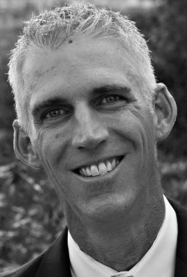
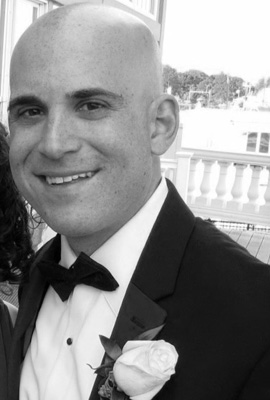
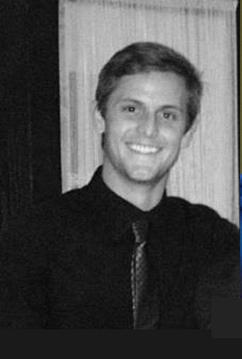
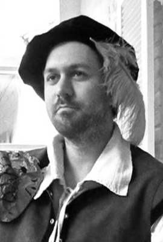
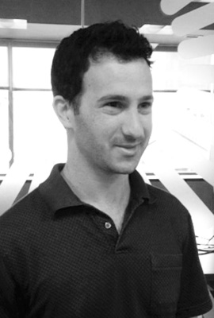

Unmatched experience in online sampling
Our Leadership
-
Patrick Comer
CEO
Patrick has ten years of experience with start-ups as a founder, investor, and executive with seven years experience in the market research industry. In 2005, he joined OTX Research to improve sample acquisition and routing technology adding $1-2MM in EBITDA annually. In 2006, he started the Sample Services group at OTX which grew to $4MM in revenue in 2007. In 2008, he merged the group with the programming and hosting unit, RSX, and doubled the combined revenues to $15MM (25% of total OTX revenue). Ipsos announced its acquisition of OTX in January, 2010 for $71MM.
Previously, Patrick was the founder and Vice President for Operations of Sample Czar, an online sample broker, where he built the core technology and established the initial sales pipeline. In 2003, Patrick joined IFILM and founded the surveys group, doubling their revenue and creating new vendor relationships.
Patrick got his entrepreneurial start in the halcyon days of dot-com. He was Chief of Staff of govWorks, an e-government startup, which raised $65MM in the US. govWorks is also known for the documentary of its rise and fall, “Start-up.com,” in which Patrick has a few key scenes.
Patrick has his MBA from Columbia Business School and his BA from Sewanee: The University of the South.
Connect on LinkedIn
-
Michael McCrary
President
Michael has over fifteen years of experience in marketing, advertising, and research. In 2003, he joined Greenfield Online and played a significant role in the growth of the company into the leading online data collection provider. After Greenfield’s successful public offering in 2004 (Nasdaq: SRVY) Michael moved from Greenfield’s Wilton Connecticut headquarters to California to run the west coast division out of Encino. When Michael departed Greenfield in 2009, after the sale of the business to Microsoft for $486 million, he was the company’s SVP responsible for North America sales and marketing with a team of 30 sales professionals and a total revenue budget of $65 million.
Michael served as the Managing Director for Cint AB after over the past year where he built a solid sales, marketing, and operational strategy. Michael also served on the firm’s management team and technology steering committee. In October 2010, Cint licensed Federated Sample’s Fulcrum platform which brought tremendous efficiency and operational power and helped grow Cint’s presence in North America and Europe. Michael is passionate about technology and knows first hand the positive impact that Federated’s products can deliver to the market research industry. When Michael is not working he enjoys spending time with his wife and two children, playing golf, mountain bike riding, jogging, and an occasional hand of Texas hold’m.
Michael graduated with a B.S. from the Belk College of Business at UNCC with a concentration in Marketing.
-
Christy Luquire
Senior VP
Finance and AdministrationChristy joined Federated Sample in Spring of 2010, bringing years of financial and management experience across multiple industries to the company. Based in New Orleans, her role is multi-faceted, focusing primarily on finance, human resources, and client service matters.
Prior to joining Federated Sample, Christy was a Vice President within Wells Fargo’s investment bank. She began her career with Wachovia, where she was selected to be a founding member of their Institutional Foreign Exchange group, generating over $10MM in first-year revenue and adding nine employees in Charlotte, London, and Hong Kong. Following the entrepreneurial Institutional FX role, she was selected to introduce FX to Wachovia’s fast-growing Texas middle market banking group. She established over 100 new client relationships in her first year, providing financial hedging solutions while carefully managing the overall client experience.
Christy is currently attending Wharton’s Executive MBA program and earned her BS in Engineering from Duke University.
Connect on LinkedIn
-

Andy Ellis
Senior VP
Corporate DevelopmentAndy has over 15 years of experience managing global operations, sales and technology teams in the market research industry. Prior to joining Federated Sample, Andy held the title of Managing Director Europe and Asia-Pacific at Greenfield Online where he was responsible for expanding the company’s business operations into new geographies while overseeing sales, operations and marketing in these fast growth markets. Andy joined Greenfield Online in 2003 and was part of the executive management team responsible for building Greenfield Online into a global, 600+ employee, publicly traded company (Nasdaq: SRVY) as well as the ultimate sale of the business to the Microsoft Corporation in 2008 for $486 million.
Andy got his start in the market research industry at Quick Test/Heakin in 1996 where as Vice President of Corporate Operations his responsibilities included all sales, customer service, marketing, product development and information technology activities. Andy also served on Quick Test/Heakin’s Executive Management Committee helping to steer strategic planning for the company.
Andy began his career working for Standard & Poor’s Government Group as an economic consultant after receiving his BSBA from Creighton University.
Connect on LinkedIn
Our Team
Meet the passionate, hard-working, fun-loving individuals who form our tight-knit group. Looking for a chance to join a great team?
View Career Opportunities-
AlexLeger
I have lived in 7 cities.
My initials, AIEL, are also the name of a race of people in the Wheel of Time series.
I have attended the Historical Miniatures Gaming Society’s fall convention in Lancaster, PA.
-
VigneshKrishnan
I had an antelope as a pet, and almost had a lion cub as a pet too (really) but my parents declined the offer from the zoo.
People never understand why I am a big fan of the German soccer team, and neither do I.
Despite being in the tech team and thinking a lot about implementation, I like to think I’m very creative.
-
JulieFinkelstein
A picture of me and my identical twin was featured on 50 billboards in Israel in 1998.
I am a proud member of the Who Dat Nation and the Texas Exes. Who Dat and Hook ‘em Horns!
I have the best rescue dog in the world. A beagle mix named Chutzpah!
-
KathrynIsenmann
I grew up in London and traveled extensively.
I currently live in a bright orange house.
When I am not working, I like to volunteer with arts organizations in New Orleans.
-
MeredithMay
I’ve been in a movie with Tony Hawk, Vanilla Ice and Gene Simmons.
I rode in the Houston Livestock Show & Rodeo when I was 3 years old.
I’ve provided voiceovers for japanimation.
-
JebHunsinger
I ride my bike to work every day.
I obsessively eat pistachios.
I’m one miserable boat ride to Antarctica away from having visited every continent.
-
RaquelTejeda
-
PattyPomposo
-
DavidButler
At one point, I was a forklift operator for a packaging warehouse.
I have never logged on to Facebook, but I know what it is.
I produced a Busta Rhymes concert during his tour supporting The Big Bang album.
-
BrookBissinger
I went sky diving over the Great Barrier Reef.
When I was 3 years old I had an imaginary friend named Charlie – it’s a sign of creativity!
My first car, a Pontiac Sunfire, was hit by a streetcar and a cement truck in the same year.
-

AndrewKatz
I once met Muhammad Ali, Michael Jordan and Wayne Gretzky in the same night.
In college I broadcasted multiple NCAA tournament basketball games for my college’s radio station.
For my high school AP US History class I learned every word of Billy Joel’s “We Didn’t Start The Fire” (and still remember them all today).
-
NikhilLobo
I sometimes speak Hindi not realizing the people around me won’t understand.
I like to eat fruit only when it’s in frozen yogurt.
Believe it or not, I didn’t have a TV for 7 years until I got one recently.
-
ChrisHaberl
My parents coerced me to play lead clarinet in a traditional marching band for six years - once, when marching towards a funeral, I marched left when everyone else went right.
When riding my bike in my black poncho through Brussels, some guys started singing: “na-na na-na na-na na-na na-na Batman, Batman, Batman”.
I am the voice behind the Fulcrum Dragon.
-
MattTritico
-
TedPulsifer
Every year I complete a 2.4 mile ocean swim race.
I’m a certified sommelier, but favorite wine is the next open bottle.
I know that the greatest musician and coolest guy of all time is Johnny Cash.
-
KerryFoleyKessler
My family is one of 8 families raising small children in the French Quarter.
I have been told I have too much of a personality to be an accounting professional.
If I won the PowerBall tomorrow, the first person I’d call is my tax attorney, then I’d tell my husband but no one else.
-
LucyWarburton
I have a healthy obsession with architecture and interior design.
I was raised in the same St. Louis suburb as author Jonathan Franzen whose novels are largely influenced by his experience growing up there.
I was introduced to Marmite while living in England and oddly enough, have loved it ever since.
-
BondLengsfield
Once drove Cameron Diaz around Beverly Hills as a favor to help her evade paparazzi.
Cliff jumped off a 50 foot waterfall in Fiji.
I am named after a character in a John Wayne film.
-
MichaelVelez
If I could punch any celebrity it would be Michael Stipe.
I cannot run a marathon and probably still could not even after 5 months of training.
I have traveled to 8 countries.
-
AdamHaines
I am a twin.
I am father of three.
My actual name is James, but I go by my middle name.
-
KatieHock
-
MichaelMayer
I’ve ridden an elephant, camel, and small dog.
I like to speak in accents.
I ate 50 wings in an hour without employing the Kobayashi shake.
-
PhillipWoodruff
I babysat Salma Hayek’s daughter Valentina on a movie set once when I was an extra.
I assisted on a surgery at the Audubon Zoo where we neutered one of the Jaguars.
I have technically died twice. My heart stopped when in was in the Hospital for pneumonia and I had to be shocked back.
-
JordanTeachworth
I play guitar, bass, and piano, and I have been in a few local bands.
When in ROTC in high school, I had the privilege of meeting the Commandant of the Marine Corps.
I really love computers and other modern technology.
-
MattShwery
I experienced a concussion and temporary memory loss once when a parked car hit me riding my bike.
I have served coffee to more famous people than you can count on three fingers. (Adrien Brody, Abigail Breslin, Rose McGowan, Andrew Bird… that’s it.)
Before managing a coffee shop for four years, I had never tried coffee.
-
LauraBanos
-

JustinHarbor
-

NathanMorell
I’m newly married
I love coffee
Does stuff (Computers, yay!)
-
DanFletcher
My Senior Superlative in High School was “Biggest Car”
I have an unhealthy obsession with the Boston professional sports teams
My favorite accomplishment of the past year is making an appearance on Google Street View wielding a leaf-blower
-
JessicaInman
I eat Vietnamese food at least 4 times a week. Pho real.
I have a cat named Phi which is unrelated to my love of Vietnamese food, but has a direct correlation to the Phi Phi islands (in Thailand).
I’m a neat freak and if you don’t watch out you’ll find your belongings stacked in orderly, unrecognizable piles.
-
MonicaNguyen
I love aquariums, but don’t like the ocean because I am scared of fish.
I am obsessed with Haribo gummy bears.
I grew up in Oviedo, Florida, where our claim to fame is the group of chickens that congregate outside of Popeye’s.
-
 DynaBoen
DynaBoenMy favorite job in the world is being a Mom
I’m an avid runner; I just finished the Marin ½ Marathon in 1:55
I love to bake! I’ll bake for you, if you ask. My specialty is pumpkin cheesecake.
-
PatrickStoudt
I have a twin brother who looks very similar to myself.
I am a beer connoisseur and enjoy home brewing my own beer from time to time.
I am an avid sports fan, with my main teams being the New Orleans Saints and the LSU Tigers.
-

AaronKreshtool
I am a huge Baltimore Orioles, Ravens, & University of Maryland sports fan.
My favorite food group is the P’s (pizza, pineapple, pesto, chicken parmigiana, et al.) I find peas themselves just OK.
Once, after honking my car horn at another driver, the horn didn’t turn off. The horn blared continuously the entire 5 mile ride home.
-
 AdamJacob
AdamJacobI have a DVD/Blu-ray collection in excess of a thousand videos.
I am a self-published author of a New Orleans based historical fiction novel.
I am a descendent of Louis Juchereau de St. Denis who established the first permanent settlement in Louisiana of Natchitoches in 1714.